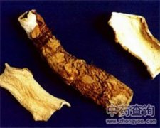

海芋

拼音
Hǎi Yù
别名
痕芋头、狼毒[广东]、野芋头、山芋头、大虫芋、天芋、天蒙
来源
天南星科海芋属植物海芋Alocasia odora （Roxb.） K. Koch的根状茎。全年可采，去外层粗皮，鲜用或切片晒干。
生境分布
生长山野间。分布广东、广西、台湾、福建、湖南、四川、贵州等地。主产于广东、广西、四川等地。
药材特点
多年生草本，高可达5米。茎粗壮，粗达90厘米。叶互生；阔卵形，极大，长30～90厘米，宽20～60厘米，先端短尖，基部广心状箭头形，2裂，裂片先端浑圆，近叶柄处合生，裂口狭，全缘或微呈波状，侧脉约9～12对，粗而明显，绿色；叶柄粗壮，长60～90厘米，下部粗大，抱茎。花单性，同株；花序柄粗壮，每一叶腋内约有2个，长15～20厘米；佛焰苞的管长3～4厘米，粉绿色，苞片舟状，长10～14厘米，宽4～5厘米，绿黄色，先端锐尖；肉穗花序短于佛焰苞。雌花序长2～2.5厘米，位于下部；中性花序长2.5～9.5厘米，位于雌花序之上；雄花序长3厘米，位于中性花序之上；附属体长约8厘米，有网状槽纹；子房3～4室。浆果红色。花期：春末夏初。
性状
干燥的根茎，呈椭圆形、长椭圆形或圆柱形，大小不一，长者可达90厘米，直径3～6厘米或更粗。有时可见未除尽的栓皮及环状的节和圆形的根痕。质坚实，横断面白色粉质，维管束呈淡黄色点状散在，内皮层环清晰。气微，味淡，嚼之发麻。
性味
微辛、涩，寒。有毒。
功能主治
清热解毒，消肿。用于感冒，肺结核，肠伤寒；外用治虫、蛇咬伤，疮疡肿毒。
用法用量
干品3～5钱，鲜品1～2两，久煎后方能内服；外用适量，鲜品捣烂敷患处，不能敷正常皮肤。
化学成分
球茎含水分17.4％，粗蛋白4.11％，粗脂肪0.84％，粗纤维4.99％，灰分3.76％，无氮抽出物68.9％。另含山芋碱，有毒。
药理作用
1：无药理作用
摘录
《全国中草药汇编》